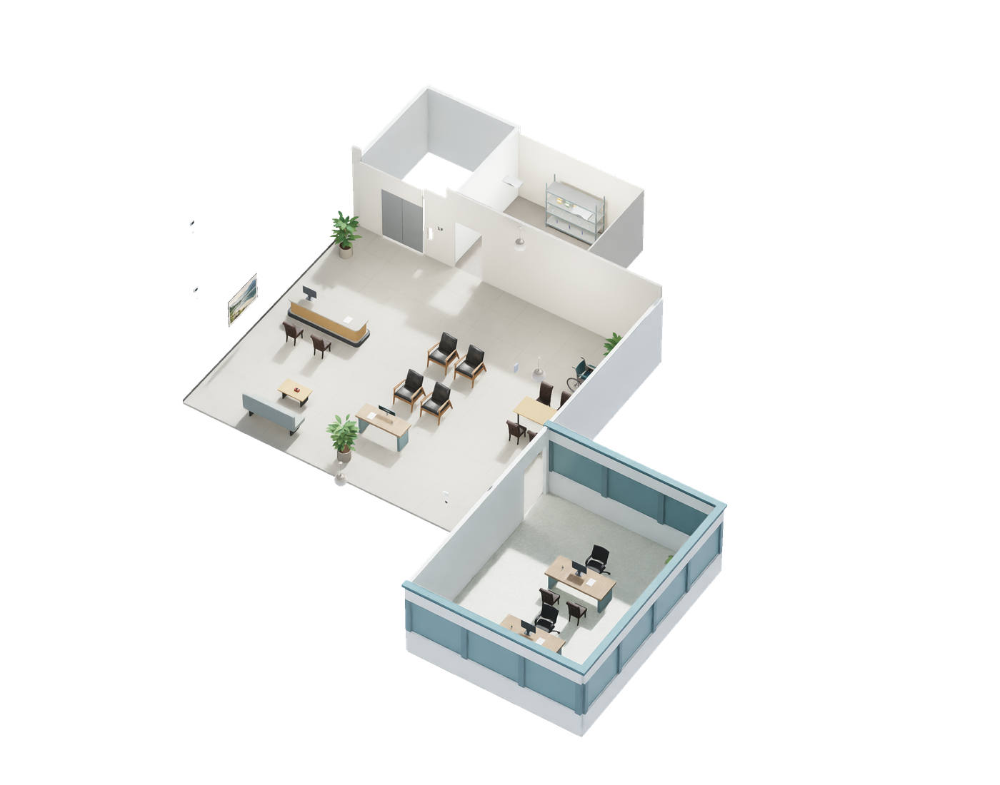

服务楼跨层到达
以 L01 为来源，乘电梯到二楼并完整驶出；主测集剔除出生即在目标层的实例。
通用任务 · 双本体验证待完成ENVIRONMENT 08 / 9
08RECEPTION & SUPPORT SERVICES


Interior
INSIDE THE ENVIRONMENT
Select a level to explore its interior.

CAPABILITIES & EMBODIMENTS
通用任务面向 FWMiniPiper 与 G1；专用任务测试指定本体的特有能力。当前均为待验证设计，不表示已完成物理执行。
一楼前台与库存水；二楼冰箱、服务台；三楼会议室、灯控与服务台。以库存、冷藏、会议准备和闭会回收形成服务链。
以 L01 为来源，乘电梯到二楼并完整驶出；主测集剔除出生即在目标层的实例。
通用任务 · 双本体验证待完成空手从一楼依次到二楼和三楼公共停靠区，再返回一楼；逐段验证呼梯、进出和楼层顺序。
通用任务 · 双本体验证待完成从关闭初态打开冰箱门至可取物开口，再关门；本项不抓取冰箱内物品。
通用任务 · 双本体验证待完成在三楼输入任务提供的授权密码，确认解锁后开门、通过并关闭；没有饮水配送目标。
通用任务 · 双本体验证待完成复用三楼会议室密码锁；验证双夹爪的选择性按键、解锁保持和门状态历史。
尚未启用正式评测；需完成初态配置、成功判据及指定本体的完整物理轨迹验证。
以 L06 为来源，从门已打开的会议室内把灯设为请求状态，并检查灯的实际响应。
通用任务 · 双本体验证待完成在本场景指定可达空调面板上观察初态，将开关、模式和设定值改为任务要求；至少一项需改变，其他设备不变。评分使用面板与控制器实际状态，不要求室温达到设定温度。
通用任务 · 双本体验证待完成需验证两种夹爪不误触相邻按键，并接入模式、开关和设定值裁判；不把按钮几何存在当作可按或热效果证据。
尚未启用正式评测；需完成初态配置、成功判据及指定本体的完整物理轨迹验证。
从二楼冰箱取指定可乐，放到同层外部交接台再关冰箱；允许先放物品再操作门。
通用任务 · 双本体验证待完成需按本任务配置动态物品、身份或数量标签、交接与暂放区域及指令专属历史判据；源站点存在不代表新任务初态已实现。
尚未启用正式评测；需完成初态配置、成功判据及指定本体的完整物理轨迹验证。
把一楼前台刚性外卖与二楼冰箱密封水分别取送到三楼服务台，允许分次并核对齐套。
通用任务 · 双本体验证待完成需按本任务配置动态物品、身份或数量标签、交接与暂放区域及指令专属历史判据；源站点存在不代表新任务初态已实现。
尚未启用正式评测；需完成初态配置、成功判据及指定本体的完整物理轨迹验证。
从一楼库存逐瓶取三瓶水送到三楼会议桌，并设置会议灯；不强制三瓶同时入篮。
通用任务 · 双本体验证待完成需按本任务配置动态物品、身份或数量标签、交接与暂放区域及指令专属历史判据；源站点存在不代表新任务初态已实现。
尚未启用正式评测；需完成初态配置、成功判据及指定本体的完整物理轨迹验证。
读取二楼服务台可见数量，从一楼库存补齐任务指定瓶数；不补已有足量区域。
通用任务 · 双本体验证待完成需按本任务配置动态物品、身份或数量标签、交接与暂放区域及指令专属历史判据；源站点存在不代表新任务初态已实现。
尚未启用正式评测；需完成初态配置、成功判据及指定本体的完整物理轨迹验证。
从三楼会议桌回收指定密封未开封瓶到二楼回收台，再关闭会议灯和门；不回收开口液体容器。
通用任务 · 双本体验证待完成需按本任务配置动态物品、身份或数量标签、交接与暂放区域及指令专属历史判据；源站点存在不代表新任务初态已实现。
尚未启用正式评测；需完成初态配置、成功判据及指定本体的完整物理轨迹验证。
从二楼冰箱取密封饮品并关冰箱，上三楼输入任务提供的密码，顺序开门、交付和设置会议灯及空调；会议结束事件后关闭指定设备并关门，事件时间需冻结。
通用任务 · 双本体验证待完成需按本任务配置动态物品、身份或数量标签、交接与暂放区域及指令专属历史判据；源站点存在不代表新任务初态已实现。
尚未启用正式评测；需完成初态配置、成功判据及指定本体的完整物理轨迹验证。
本场景暂无专用任务。两种本体均可使用上方通用任务候选。